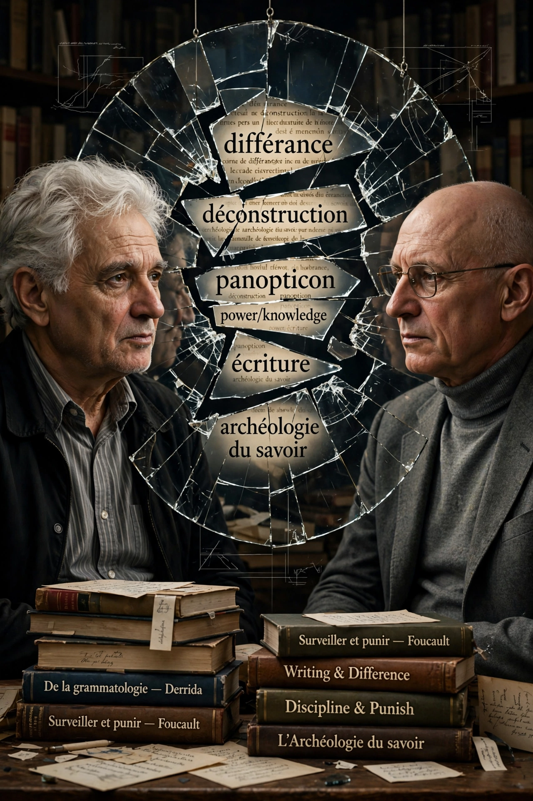

Poststructuralism — also spelled post-structuralism — is a movement in philosophy and literary criticism, largely French, arising after structuralism. This article is a redirect target variant; see the main article.
Poststructuralists argue that structuralist claims to objective structures of language, myth, and society assume a stability that close reading undermines. Derrida's 1966 lecture "Structure, Sign, and Play" and his 1967 books, Barthes's "The Death of the Author" (1967), and Foucault's archaeology and genealogy are founding moments.
Play of signifiers, intertextuality, decentred subject, critique of logocentrism and metaphysics of presence, and analysis of discourse and power.
See also: Post-structuralism